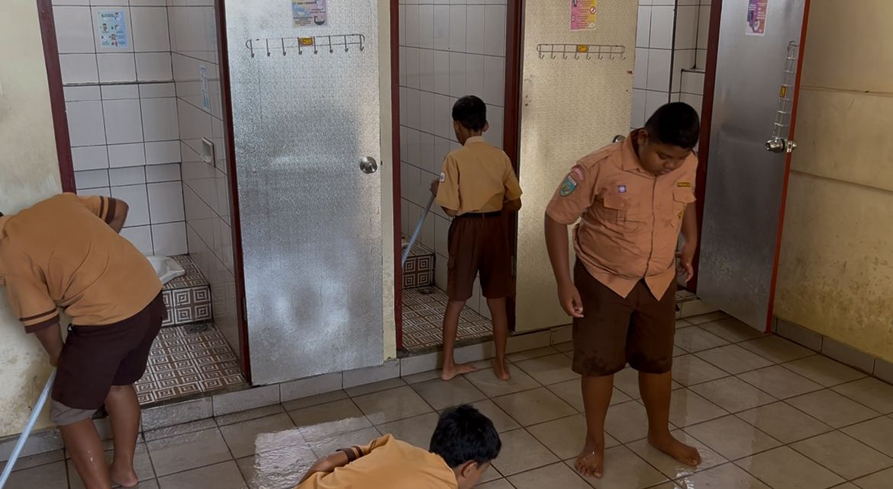

Jejak Aksi
Dokumentasi Sekolahku yang BALI
Galeri kegiatan Program Sekolahku yang BALI.

📷 Piket Kelas
Piket Kelas

📷 Piket Umum
Piket Umum

📷 Operasi Semut
Operasi Semut

📷 General Clean Up
General Clean Up

📷 Pemilahan Sampah
Pemilahan Sampah

📷 Perawatan Tanaman
Perawatan Tanaman

📷 BALI Rangers
BALI Rangers
📌 Menambah foto: buat folder dokumentasi di GitHub, lalu upload foto dengan nama file yang sesuai. Commit → Vercel otomatis memperbarui website.